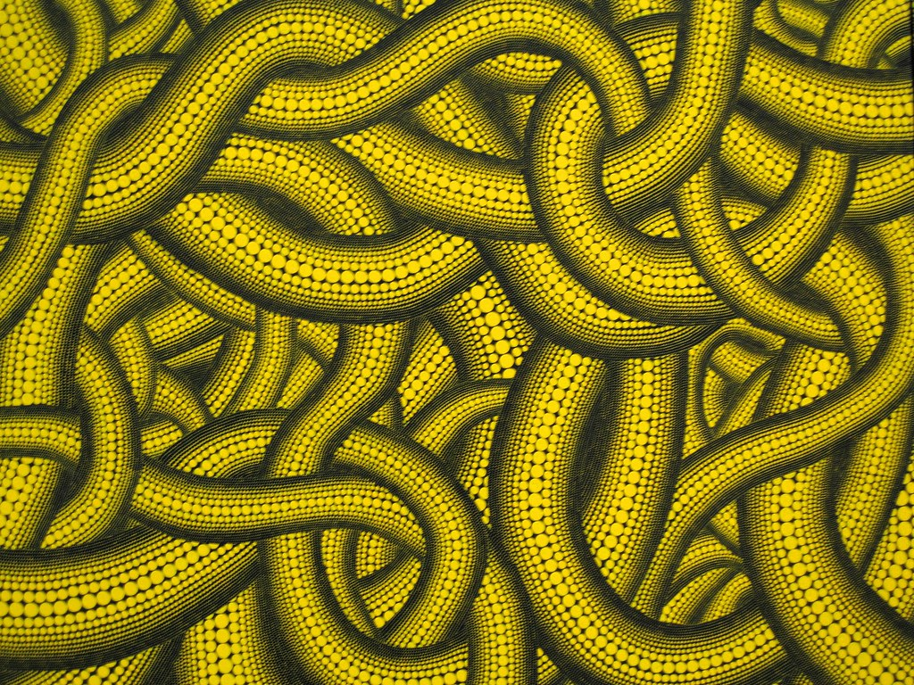
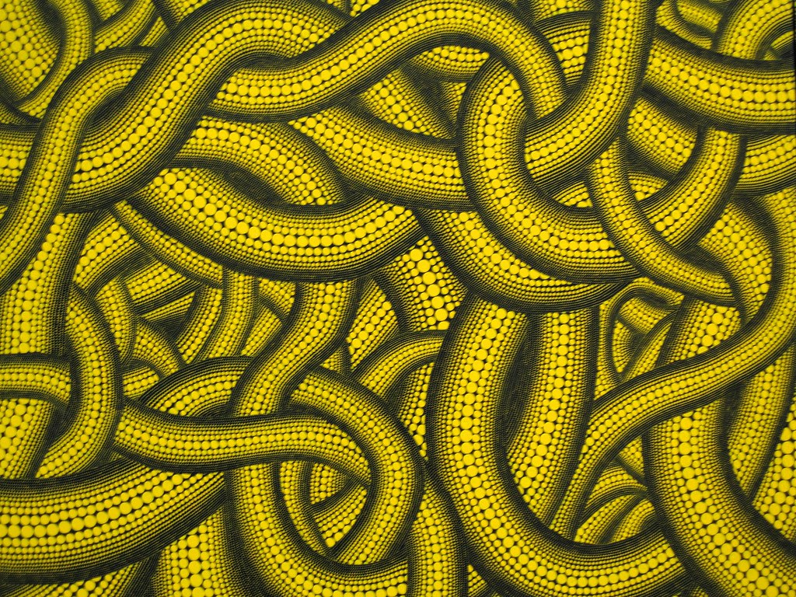

By her own account, Kusama began painting as a child, at about the time she began experiencing hallucinations that often involved fields of dots. Those hallucinations and the theme of dots would continue to inform her art throughout her career. She had little formal training, studying art only briefly (1948–49) at the Kyōto City Specialist School of Arts. Family conflict and the desire to become an artist drove her to move in 1957 to the United States, where she settled in New York City. Before leaving Japan, she destroyed many of her early paintings. Her early work in New York City included what she called “infinity net” paintings. Those consisted of thousands of tiny marks obsessively repeated across large canvases without regard for the edges of the canvas, as if they continued into infinity. Such works explored the physical and psychological boundaries of painting, with the seemingly endless repetition of the marks creating an almost hypnotic sensation for both the viewer and the artist. Her paintings from that period anticipated the emerging Minimalist movement, but her work soon transitioned to Pop art and performance art. She became a central figure in the New York avant-garde, and her work was exhibited alongside that of such artists as Donald Judd, Claes Oldenburg, and Andy Warhol.
Obsessive repetition continued to be a theme in Kusama’s sculpture and installation art, which she began to exhibit in the early 1960s. The theme of sexual anxiety linked much of that work, in which Kusama covered the surface of objects, such as an armchair in Accumulation No. 1 (1962), with small soft phallic sculptures constructed from white fabric. Installations from that time included Infinity Mirror Room—Phalli’s Field (1965), a mirrored room whose floors were covered with hundreds of stuffed phalli that had been painted with red dots. Mirrors gave her the opportunity to create infinite planes in her installations, and she would continue to use them in later pieces. Mirroring the times, Kusama’s performance art explored antiwar, antiestablishment, and free-love ideas. Those Happenings often involved public nudity, with the stated intention of disassembling boundaries of identity, sexuality, and the body. In Grand Orgy to Awaken the Dead (1969), Kusama painted dots on participants’ naked bodies in an unauthorized performance in the fountain of the sculpture garden of New York’s Museum of Modern Art. Critics accused her of intense self-promotion, and her work was regularly covered in the press; Grand Orgy appeared on the front page of the New York Daily News.


 
